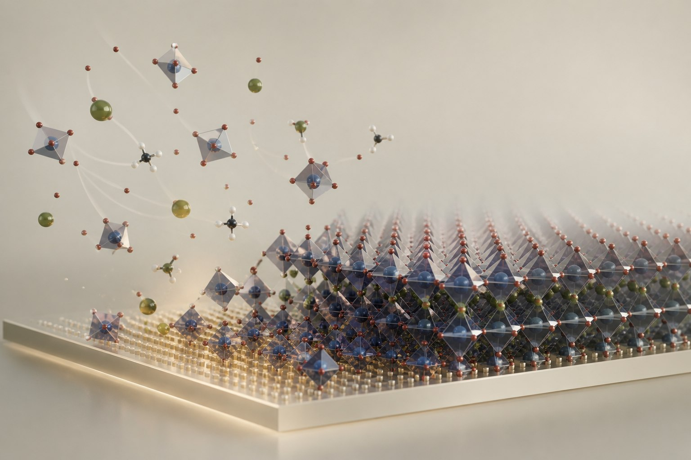
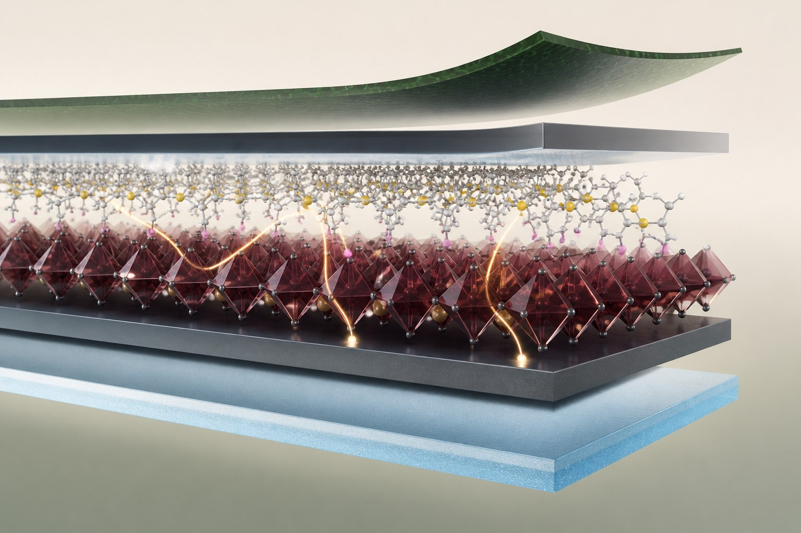
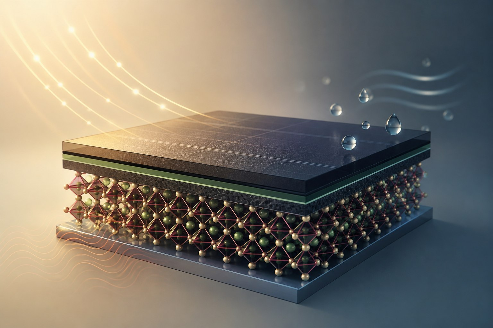

01
Crystallization & phase control
Understanding how precursor coordination, solvent removal, and molecular additives govern perovskite film formation and phase stability.
Related publicationDr.-Ing.
Postdoctoral ResearcherUniversity of Stuttgart
Crystallization, interfaces,
and resilient solar cells.
I study how chemistry and interfaces shape the formation, performance, and stability of halide perovskite solar cells.
RESEARCH THEMES

Understanding how precursor coordination, solvent removal, and molecular additives govern perovskite film formation and phase stability.
Related publication
Using organic molecules, polymers, and low-dimensional materials to manage defects, ion migration, and charge transport in lead- and tin-based devices.
Related publication
Investigating how temperature changes, light cycling, and moisture affect perovskite devices, and how materials design can improve their resilience.
Related publicationSELECTED PUBLICATIONS
Journal articles, reviews, and perspectives — browse a selection or explore the full list.
Selected publications
Newest firstNature Energy
Nature Energy 11(4), 623-632 (2026).
Science
Science 390(6777), 1021-1028 (2025).
Nature Reviews Materials
Nature Reviews Materials 10(7), 536-549 (2025).
Bibliography checked . Duplicate Scholar records are consolidated; corrections are linked to the original articles. View Google Scholar ↗
I am a postdoctoral researcher in the Emerging Materials group at the Institute for Photovoltaics, University of Stuttgart. My work brings together materials chemistry, thin-film crystallization, and device physics to understand and improve perovskite photovoltaics.
My publications explore coordination chemistry and phase formation, functional interfaces, and the response of solar cells to light, temperature, and moisture. Related work spans lead-free tin perovskites, flexible devices, and collaborative efforts on scalable photovoltaic modules.
GOOGLE SCHOLAR
04 / UPDATES
Recent collaborative work,
featured by the university.
Photoswitchable molecules help perovskite solar cells withstand changing light conditions.
Collaborative research on solvent systems for commercially viable perovskite photovoltaics.
05 / CONTACT
For research discussions and academic enquiries.
weiwei.zuo@ipv.uni-stuttgart.deINSTITUTE FOR PHOTOVOLTAICS
University of Stuttgart
Pfaffenwaldring 47
70569 Stuttgart, Germany
Room 0.215
+49 711 685 67182